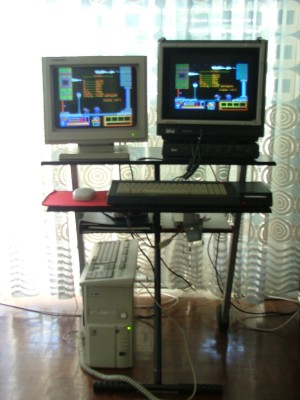
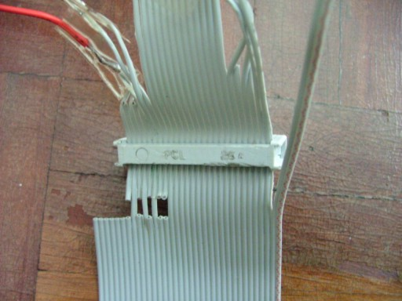
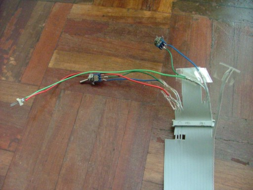
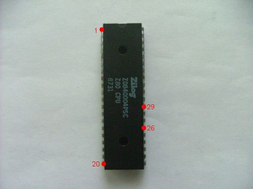
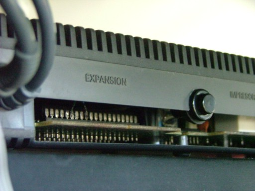
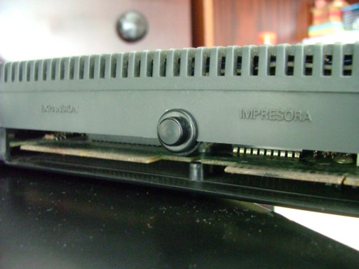
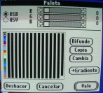
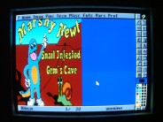
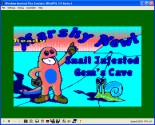

Esta sección está dedicada al maravilloso Amstrad CPC.
Es el ordenador que tuve de niño, y recientemente he
conseguido un par de ellos.
Actualmente estoy inmerso en unos proyectos hardware/software, tales como:
- Reparar la correa de goma de la unidad de 3". (hecho)
- Poner una disquetera de 3½" de 26 pines. (hecho)
- Conectarlo a un monitor VGA. (no funciona)
- Botón de reset. (hecho)
- Intercambiar programas entre PC y CPC. (hecho)
- Conversor de archivos PCX al formato de pantalla BIN. (hecho)
Aquí se puede ver a unos de mis CPC al lado del PC K6-2 400, ejecutando simultáneamente
el Goody.

1. Reparar la correa de goma de la unidad de 3".
Los dos cpc que he conseguido tenían ambos la goma de la polea rota. Repararlo
es muy sencillo con
estas instrucciones.
En mi caso particular, la goma que encontré en una tienda de electrónica (Cadesa)
era de 71 x 2,8 x 0,4 milímetros. Y ajusta perfectamente.
Debo destacar que es extremadamente fácil que se caiga el clavito que
comprueba la protección de escritura.
Yo tuve que quitar el conector del lateral para separar un poquito
más la circuitería y así acceder mejor a la zona de la polea. Con unas pinzas
puse la goma nueva. Pero antes limpié toda la zona de restos de goma vieja con
un bastoncillo impregnado en alcohol. Como la mayoria de la goma estaba
enroscada alrededor del eje del motor, lo que hice fue posar el bastoncillo y
con una pila hacer girar el motor, asi el propio giro con el bastoncillo rozando
hace que se limpie perfectamente.
2. Poner una disquetera de 3½" de 26 pines.
Se puede poner una disquetera de PC al CPC ya que ambos usan la misma controladora,
la NEC PD765. Asi que se puede poner cualquier unidad compatible con esta
controladora (5¼", 3½", ...). La unidad se puede poner externa, como segunda
unidad de disco, o interna, sustituyendo a la de 3". Rizando el rizo, alguien
podría ponerla interna y la de 3" externa (¡que absurdo!). O algo más cómico,
dos unidades de 3,5 en el CPC. Las posibilidades están ahi.
En estas webs hay instrucciones muy claras:
diegovp
jaimegs
joseman
El problema (o no, segun se mire) es que yo tengo una disquetera DD (720 Kb,
doble cara, doble densidad) de un PC XT. Crueles ironías del destino, este XT
sustituyó a mi Amstrad en 1991 y ahora es canibalizado por otro CPC (¡venganza!).
Estas disqueteras tienen la ventaja de que no hace falta tapar el agujero a los
disquetes. Ademas, todavía conservo una buena cantidad de discos de DD.
Efectivamente, esta disquetera que quiero poner no es la tradicional de 34
contactos sino una forma compacta de 26, como las que se conectan a los
portátiles externamente. Así pues, tengo que apañármelas con unas bonitas
tablas de señales de cada bus. He recopilado éstas, y las conexiones que hay que hacer.
Las diferencias son que el CPC tiene una señal común para activar el motor
y por lo tanto activa el de ambas disqueteras. Por otro lado algunas disqueteras
de 26 pines tienen una señal de READY que le viene muy bien al cpc. La mia no, asi
que para evitar mensajes de 'disc missing' hay que puentear READY y GND. El problema es
que siempre estará lista, haya o no disco. Yo recomiendo
comprobarlo con un polímetro, así sabrás si tu disquetera genera esta señal al CPC.


Lo mas importante es que la alimentación va por el propio bus, cosa que
hay que solucionar. Conecto las 3 líneas de Vcc a +5V y un par de líneas de
masa a GND. Aunque en la disquetera no estén en común (pudiera darse el caso que
se necesitaran conectar todas, quién sabe como está hecha por dentro...),
en este caso retornarían a la fuente a través del CPC. La alimentación viene de
una fuente conmutada de PC, y qué casualidad, es la del XT (pobrecillo).
Conviene asegurarse de que cada cable va donde se supone, con ayuda de un polímetro
y comprobando detenidamente cada pin. A mi me ocurrió que no funcionó a la
primera bien porque hacía mal contacto el conector que se inserta en la trasera del CPC,
a pesar de estar limpio. La solución fue que no encajase hasta dentro, sino
un poco separado.
La idea original era poner la disquetera internamente al CPC, pero la desestimé
por que no me apetecía mutilar al pobre Amstrad. Ocurre que hay que hacer hueco
rebajando unas pestañas de plástico de la carcasa superior, y no es plan (aunque luego
le mutilé la carcasa trasera para ponerle un boton de reset).
3. Conectarlo a un monitor VGA.
Bien, tras limpiar el primer CPC que conseguí (¡gracias Mario!) había que ver
si funcionaba. Para ello necesitaba alimentarlo con 5 voltios. El conector de
alimentación coincide con el de 12v de la disquetera, asi que le tomé prestado
un rato como conector de 5V. Hay que tener en cuenta que el central es el que lleva
los 5V y el externo es masa. No os fieis del código de colores, ¿en que país se
ha visto que rojo sea masa y negro alimentacion? Bien pues yo le puse al revés
por no comprobarlo y le estaba metiendo -5V al cpc.
Noté que algo iba mal porque la fuente de PC que usaba para obtener la alimentación
disminuia las revoluciones de su ventilador... eso sonaba a más consumo de la
cuenta, es decir, a cortocircuito. Menos mal que no me cargué el CPC...
Tras este lamentable lapsus, el CPC con la alimentación bien puesta se encendía.
Como no había pantalla, tenia que hacer que me mostrara que estaba vivo. Se me
ocurrio hacerle un cat, pero no tenia alimentación para la disquetera, asi que no.
Por lo tanto le hice sonar el altavoz pulsando las teclas CLR, DEL, COPY,
moviendo los cursores... Ole, el niño esta vivo aun! Después, más refinadamente,
escribí a ciegas "sound 1,40,30" jejeje. Perfecto.
Bien, necesitaba pantalla. ¿Y qué mejor que la VGA del XT? Aqui me pudo la prisa, y tras ver
los esquemas de pines de los conectores de video del CPC y el monitor VGA, vi que la diferencia era
el sincronismo, que en el CPC es compuesto, y en la VGA va por pines separados.
Raudo, me lancé a la búsqueda de un separador de sincronismos. Esto lo hace muy bien
el integrado LM1881 de National Semiconductor. El circuito a construir es el que viene
en el PDF. Y este es el resultado (unos 5 euros):

Desgraciadamente al conectarlo la imagen salía desplazada, fallaba el sincronismo
horizontal. Esto es por que el sync horizontal es de 15 KHz en el CPC, ya que es
una señal RGB, y en el monitor es de 31,5 KHz ya que es VGA, cosa que no hay que confundir
con que las señales del VGA incluyan las componentes RGB.
Ningún monitor VGA que he visto es capaz de barrer a 15 KHz, ni los Multisync de NEC.
Es preciso usar un monitor CGA/EGA de los de PC antiguo, o un monitor de Amstrad,
o... ¿por qué no? conectar el CPC a una tele con euroconector.
Por suerte al ir a un rastro a por un monitor de PC antiguo me encontré con otro
CPC con monitor color, así que ya tengo dos.
4. Botón de reset.
Esto es tremendamente fácil y tremendamente útil. Los CPC no tienen botón de reset,
y la combinación de teclas que reinicia el ordenador, CTRL+SHIFT+ESC, suele ser
desactivada por muchos programas. En consecuencia, se debe apagar la máquina y volverla
a encender. ¿Alguien sabe si los primeros CPC que se vendian en España tenian reset?
Creo recordar que sí.
Comprando un económico pulsador, le soldamos unos cablecillos de unos 10 cm de largo.
De este modo nos será mas fácil trabajar cuando estemos cerrando el CPC después de
abrirlo para colocar el botón.

Sacamos la CPU de su zócalo con un destornillador plano, haciendo palanca suavemente
por los extremos. Ahora soldamos los cables a las patillas 26 y 29 de la CPU, no
importa el orden. Bien, luego es necesario horadar la carcasa del ordenador para poner
el botón. Esto se hace bien con unas limas y un cortatramas. Yo lo he hecho entre
el conector de expansión y el de impresora, que está cerca del micro, no molesta
a la hora de conectar dispositivos y hay que hacer menos agujero.
Cerramos el CPC con cuidado y ya está (quizá esto fue lo que más sudores me dió).


5. Intercambiar programas entre PC y CPC.
Los programas que uso para pasar datos del PC al CPC y al revés son:
cpdread: CP/M -> DSK
cpcxfs: DSK <-> DOS
22disk: conjunto de utilidades
CFMT: formatea en CP/M el disquete en el PC
CTOD: pasa archivos de un disco formateado en CP/M al disco duro del PC
DTOC: pasa archivos de DOS a un disco formateado en CP/M en el PC
Como se puede ver, para pasar un DSK a disco hay que usar 3 utilidades.
¿No podría hacerse con una sola? En efecto, si, y ya existe. Se llama cpdwrite.
El problema es que no funciona bien bajo Windows, ni MS-DOS, ni nada, como tengas
un PC algo rápido (es decir, más de un P-166). Yo en mi K6-2 400 no he podido usarlo
ni con ralentizadores del sistema (ni Windows ni MS-DOS) sin obtener el
odioso mensaje:
ERROR: no response within timeout period..
He creado una utilidad que solventa este problema. Se llama DSK2CPM.
Bueno, esta
aún en pañales, pero es capaz de escribir un DSK en un disco de 3,5" CP/M.
Sus pegas son que el disco ha de estar ya formateado con el mismo formato que el
DSK, sólo puede escribir por la primera cara del disco y ha de funcionar bajo MS-DOS
puro. No he conseguido que formatee, ¿alguien sabe algo sobre este tema?
6. Conversor de archivos PCX al formato de pantalla BIN.
El método más rápido de cargar datos del disco a memoria en el CPC es que estos datos tengan
un formato binario. Me encontré con este problema mientras hacia un pequeño editor de sprites
que funcionara en el CPC. Pensé que mejor que esto, sería usar mi tradicional Deluxe Paint en el PC
y luego pasar de algun modo el archivo PCX al CPC. Por lo tanto, habria que convertir el PCX en
un archivo como los que guarda el CPC con la orden SAVE"pantalla",&C000,&4000
Probé un conversor de PCX a CPC que encontré en una web francesa, pero no me convenció el modo de
convertir el dibujo y la paleta: me creaba colores donde no los habia.
Así que decidí programar mi propio conversor, llamado propiamente PCX to CPC.
Su funcionamiento en lineas generales es: primero carga el archivo PCX, posteriormente escanea la pantalla siguiendo
la particular estructura de la memoria de vídeo del CPC, y salva el resultado, con la cabecera adecuada.
De este modo, se carga simplemente con LOAD"pantalla"
El modo de empleo requiere un poco de cuidado en el diseño del PCX. El sistema de trabajo es como sigue:
1- Dibujamos un archivo PCX en resolucion 320x200x256 colores.
2- Empleamos sólo los 16 primeros colores de la paleta.

3- Empleamos sólo 160 de los 320 pixeles de ancho (la mitad izquierda de la pantalla).

4- Lo salvamos.
5- Abrimos una ventana MS-DOS.
6- Escribimos:
pcx2cpc "nombre del archivo PCX"
El nombre puede tener o no extensión, y se ha de especificar el path completo. Ejemplos:
pcx2cpc \pant.pcx
pcx2cpc pant.pcx
pcx2cpc pant
pcx2cpc d:\mis dibujos\pant.pcx
7- Se ha creado el archivo en el directorio raiz de la unidad donde está el programa. Para los ejemplos anteriores
se llamaría pant.gra
8- Metemos ese archivo en un DSK o lo pasamos al CPC, con cpcxfs o dtoc.
9- En un emulador o en un CPC, escribimos load"pant.gra"
10- ¡Hecho!

Vaaale ya lo sé, la paleta la tienes que poner tu mismo, a base de una ristra de órdenes INK...
Pero a mi esto no me parece un problema la verdad.